MeshFrame
Overview
MeshFrame is a light-weighted, efficient and header-only mesh processing framework. Its speed is superior to other state-of-the-art libraries like OpenMesh, MeshLab or CGAL. It supports dynamic mesh structure editing, runtime dynamic properties whose speed is no inferior to static properties, triangle/tetrahedral mesh, with a built-in viewer, and also includes a number of mesh processing algorithms.
MeshFrame2 is the latest evolution, serving as the core mesh data structure library in the Gaia Engine.
Key Features
Blazing Fast
Superior efficiency compared to OpenMesh, CGAL, and MeshLab for common mesh processing operations.
Header-Only
No pre-compilation required. Simply include the headers in your C++ project and start using it immediately.
Triangle & Tetrahedral Mesh
Full support for both triangular surface meshes and tetrahedral volume meshes with unified API design.
Zero Dependencies
No mandatory external dependencies. Eigen and FreeGlut are optional for numerical computation and visualization.
Dynamic Properties
MeshFrame offers a convenient way to add dynamic properties to mesh elements (vertices, faces, edges, halfedges, tetrahedrals). In contrast to the static approach of adding member attributes to inherited classes, dynamic properties are much more flexible because they can be added at runtime without recompilation.
Accessing dynamic properties is generally considered less efficient because most implementations require a dictionary search with non-constant complexity. However, in MeshFrame, we managed to reduce the complexity of accessing dynamic properties to constant time through our PropHandle system:
Mesh m;
VPropHandle<float> vPropHandle;
m.addVProp(vPropHandle);
// Accessing properties - constant time!
for (M::VPtr pV : m.vertices()) {
int & idx = m.getVProp(vIntHandles[NUM_PROPS - 1], pV);
idx = k++;
}Thanks to our efficient memory management techniques, the speed of accessing our dynamic properties is no inferior to accessing static properties:
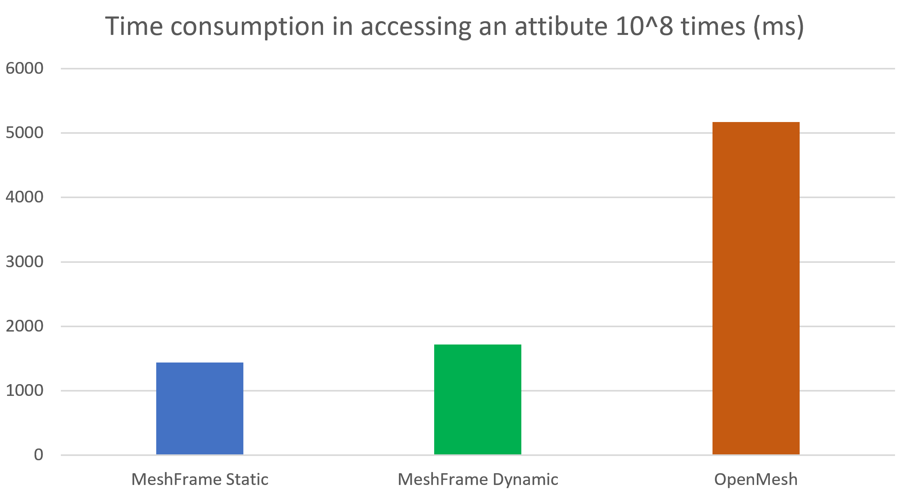
Dynamic Structure Editing
MeshFrame supports dynamic mesh structure editing at runtime with built-in commands for common structural operations like edge collapse, edge split, and vertex split:
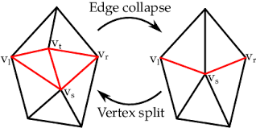
The API is simple — MeshFrame handles the complex memory management and halfedge structure changes behind the scenes:
DMesh m;
DMEdge* eToCollapse = selectEdge();
m.edgecollapse(e);
DMEdge* eToSplit = selectEdge();
m.edgesplit(e, 0.5); // split at midpointPerformance: Mesh Simplification
We benchmarked our QEM (Quadric Error Metrics) mesh simplification implementation against MeshLab's implementation on a dataset of 40 OBJ meshes with various types and topologies. Our implementation is approximately 3 times faster than MeshLab's:
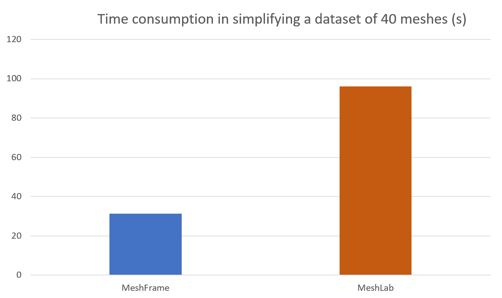
Mesh Simplification Results
Original meshes (top) and simplified results (bottom).
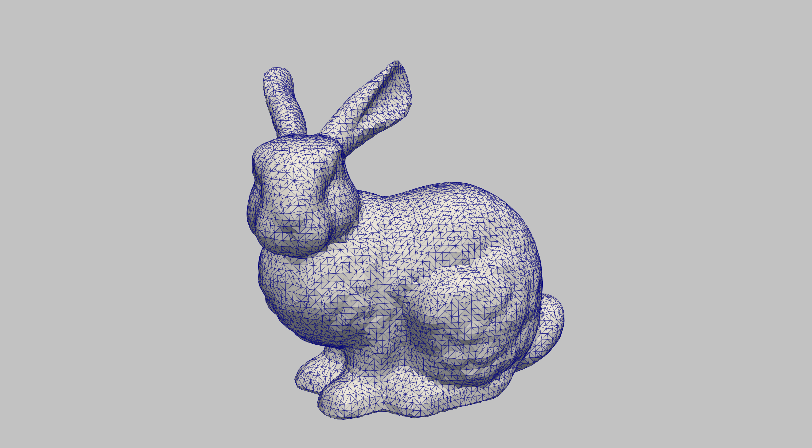
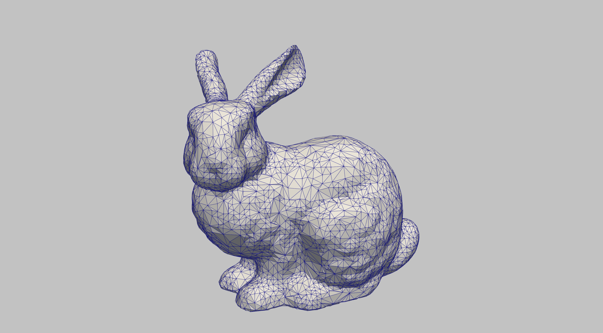
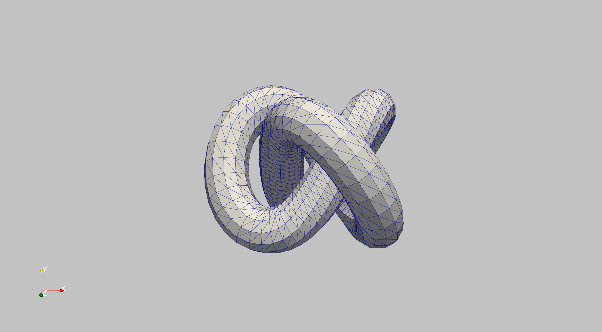
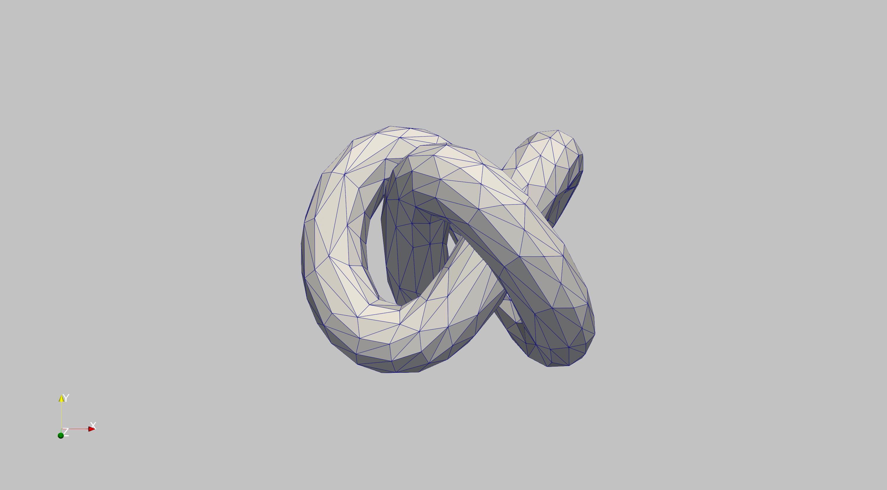
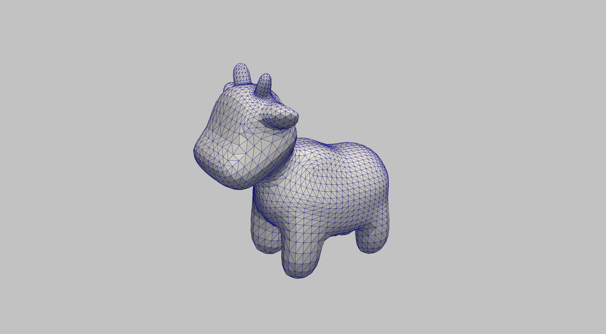
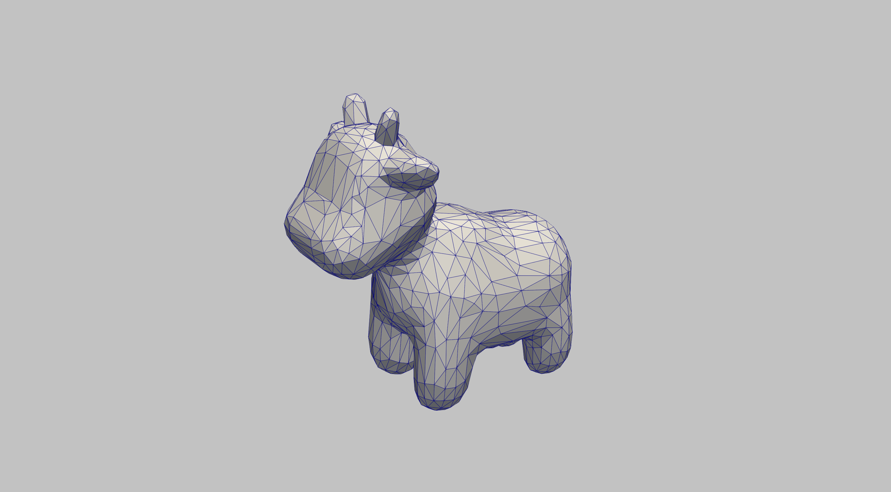
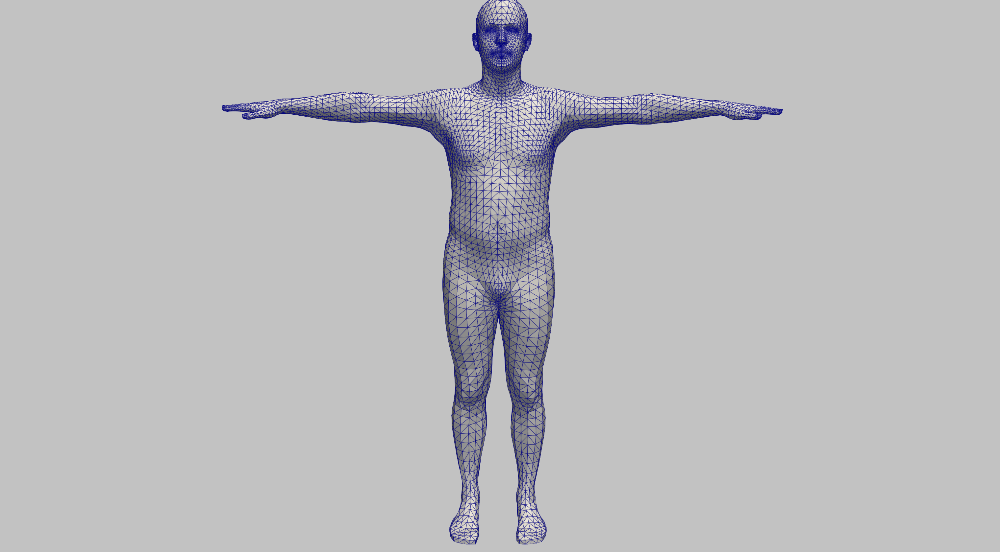
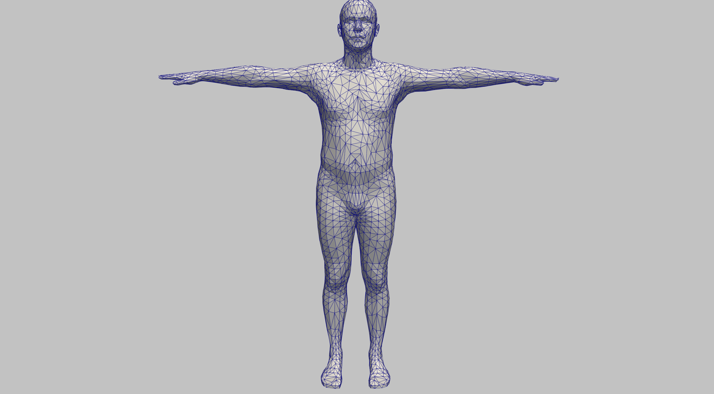
Getting Started
MeshFrame is header-only, so integration is straightforward:
# Clone the repository
git clone https://github.com/MeshFrame/MeshFrame.git
# Or for MeshFrame2 (latest version)
git clone https://github.com/AnkaChan/MeshFrame2.git
# Simply add the include directory to your project
# No compilation needed!Optional dependencies:
- Eigen — For numerical computation
- FreeGlut — For built-in mesh viewer
Applications
- Gaia Engine — MeshFrame2 serves as the core mesh data structure for Gaia's physics simulation pipeline.
- Mesh Simplification — MeshFrame includes a very fast QEM mesh simplification implementation, approximately 3x faster than MeshLab.
- Point Cloud Processing — Used in research on point cloud normal estimation and denoising.
- 3D Scanning — Applied in depth data alignment, texture synthesis, and mesh reconstruction projects.
Versions
MeshFrame
Original Version
The original mesh processing library with full documentation, viewer, and algorithm library.
57+ Stars
MeshFrame2
Latest Version
The successor, optimized for integration with Gaia Engine. Used as the core mesh library in production.
39+ Stars